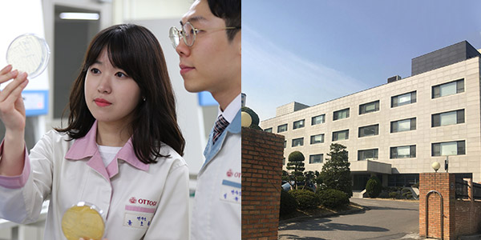
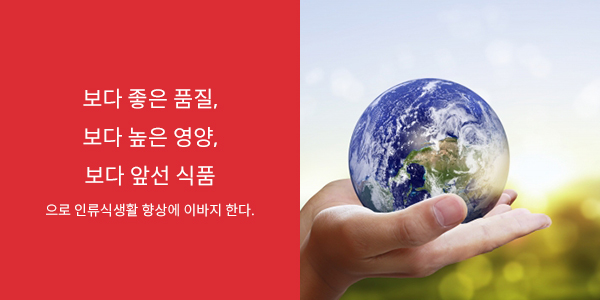

사업장 소개
- 중앙 연구소
- 참신한 발상과 급변하는 소비자의 기호에 빠르게 대응하며 제품에 대한 소비자 욕구를 신속하게 수렵하고 또 예측하면서
언제나 새로운 식품문화 개발에 노력하고 있습니다.
연구소 소개
보다 좋은 품질, 보다 높은 영양, 보다 앞선 식품으로 인류식생활 향상에 이바지

- 중앙연구소는 경기도 안양시 동안구 흥안대로 395번길 49에 소재하고 있으며, 연구개발부를 거쳐 85년 연구소, 89년 5월 중앙연구소로서 발족되어, 과학기술처로부터 기업부설연구소로서 승인 받았습니다.
- 중앙연구소는 1989년 현재 사용중인 건물에 입주하여, 국내 식품회사 최고 수준의 유화기, 균질화기, 레토르트살균기 등 다양한 파일럿 설비와 각종 시험 분석기기들을 갖추고 있고, 5000 여권의 전문 서적을 구비하여 최적의 연구환경에서 활발한 연구활동을 펼치고 있습니다. 연구투자에는 최근 수년간 매출액 대비 약 1%에 해당하는 연구개발비를 투자해 왔으나. 향후에는 매출액 대비 1.5% 수준까지 투자를 확대해 나갈 방침입니다.
- 중앙연구소는 CS 센터, FS 센터, 연구기획팀, 정보센터로 구성되어 있으며, 총 100 여명의 전문 연구인력이 '보다 좋은 품질, 보다 높은 영양, 보다 앞선 식품으로 인류식생활 향상에 이바지 한다'는 회사 방침에 따라
- 폭넓은 시장 조사와 정확한 분석을 통해 시장 트랜드 및 고객의 니즈를 파악하고, 이를 신속하게 제품 개발 및 개선에 반영하고 있습니다. 또한 "자연과 함께 맛으로 행복한 세상"이란 슬로건 아래 제조 단계에서 환경영향을 최소화 할 수 있는 제품 설계 및 사용 단계에서 탄소 배출을 줄일 수 있는 조리법 연구에도 노력하고 있습니다.
